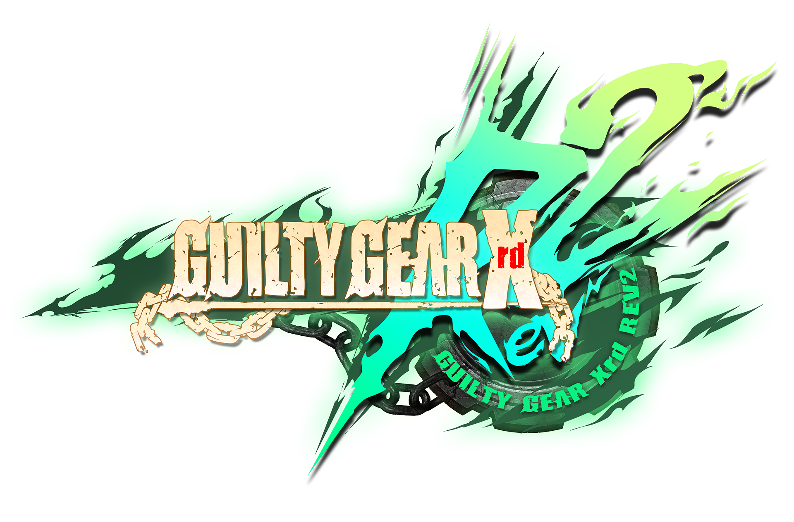

Who Dares To Enter The Mayhem?
Use your mouse to hover/click and learn more about each fighter from the world of Guilty Gear.

Use your mouse to hover/click and learn more about each fighter from the world of Guilty Gear.
Frederik Bulsara was once a scientist who worked closely with Aria Hale, his lover, and Asuka R. Kruetz, his long time friend, to research and bring the concept of "Gear Cells" into creation. after experimenting on both himself and Aria with Gear cells, both he and Aria were mutated into Gears, uncontrollable monsters of world ending power. Aria lost control of her mind in the process and became violent, forcing Frederik into action and resulting in her death. Frederik now grieves the death of his love while vowing to wipe out all remaining Gears that sprung up as a result of his own research and creation, wandering the world and known to all government organizations under a new moniker: Badguy.
Sin Kiske is the son of the Gear named Dizzy, and Ky Kiske, a prodigious knight who gave service during the most influential war in earths history, The Crusades. Now a king of the land, Ky decided that he did not have time to raise sin properly while serving duties as king, instead entrusting the care of Sin to Sol. Sin as a result grew up to be very rash and crude, but is still a young and adventurous soul with endless fascination for the world around him, and a profound respect for sol, his father figure. Sin also harbors a deep resentment towards his father Ky, for neglecting to raise him and not teaching him about his nature as a Half-Gear.
As one of few remaining Japanese people, May carries with her a tremendous amount of strength for her age and stature, capable of feats of strength completely unfathomable to humans. May is the second in command of the Jellyfish Pirates, a group of travelling thieves who take from the rich and protect the impoverished. She was orphaned early in life but was saved and taken care of by Johnny, the current leader of the Jellyfish Pirates.
Years prior, a doctor who was nicknamed "Baldhead" was known by many, as a kind and endlessly learned practitioner in both medicine and healing magic. Once attempting to learn the secret to revival, greater powers in the government of the world decided that he would know too much, and decided to cut his operation short, tinkering with his work and causing the death of a young girl on his operating table. The immediate grief and confusion caused him to go mad, running away from civilization and slaughtering anyone in his path. Once regaining sanity, the doctor realized what he had done and vowed to end his own life. None had seen the doctor since then, but rumors have emerged since of a doctor named Faust concealing his face with a paper bag, travelling the world and helping anyone in need of medical care.